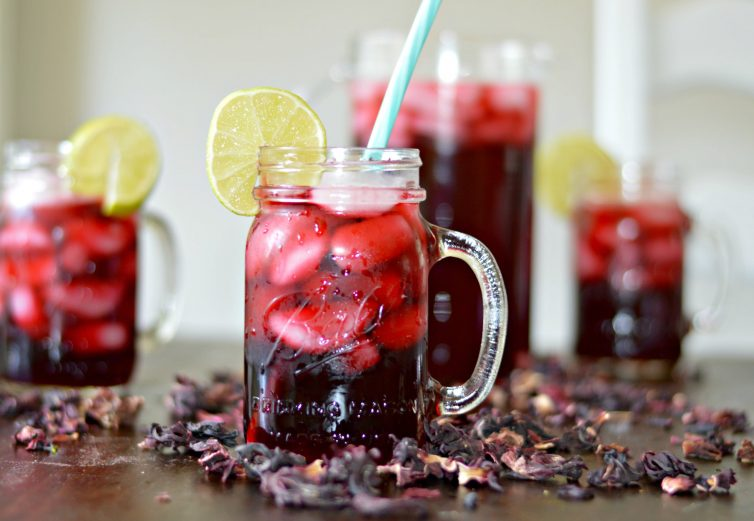
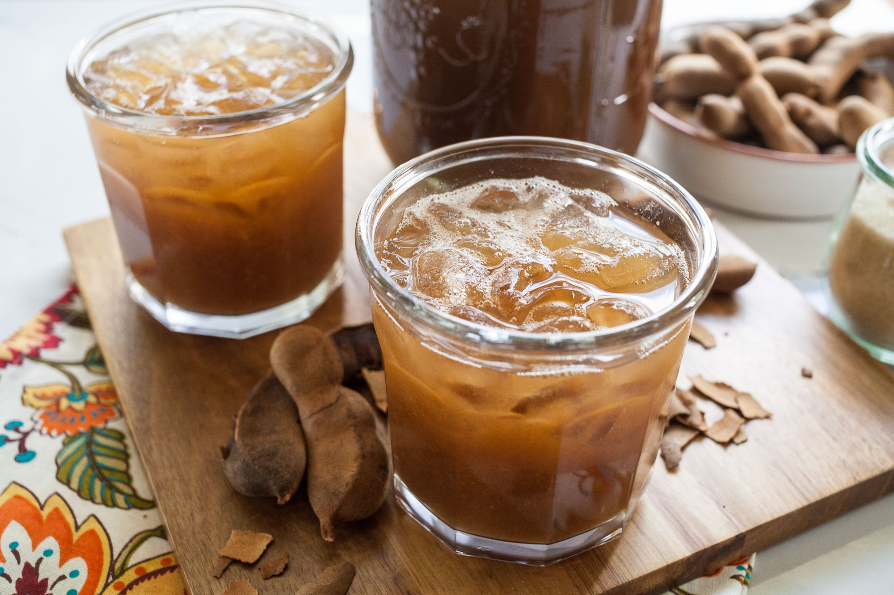
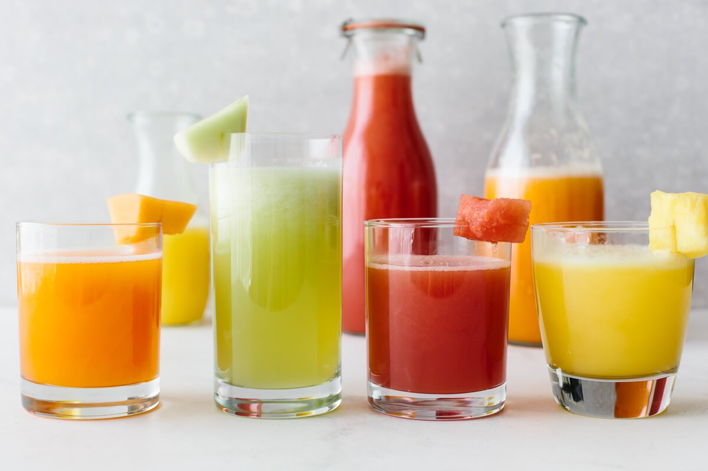

HORCHATA AGUA
Instructions:
- Start by soaking the rice, cinnamon, and almonds in a bowl of water all night, or at least for 5 hours so that the rice softens slightly.
- Strain the water from the cinnamon, rice, and almond mixture that were soaking, disposing of water.
- Blend the cinnamon, rice, and almond mixture with evaporated milk until a smoother mix is formed and the grains of rice are completely ground.
- Strain the resulting liquid into a pitcher, and add the sugar, vanilla, and milk. Mix well until everything is well combined.Add a liter of water, and serve with ice. Enjoy!
ingredients:
- 1 cup of white rice
- 1 1/3 cup sugar adjust depending on how sweet you want - 2/3 cup of sugar if you want it less sweet.
- 1/2 cup chopped almonds
- 1 cinnamon stick
- 1 T vanilla
- 1 Can 12 ounces Evaporated milk
- 1 1/2 cup of milk or almond milk
- 1 Liter of water
- Ice

AGUA DE JAMAICA
Instructions:
- In a small pot, add 4 cups of water and the dried hibiscus flowers. Bring to a boil over high heat.
- Reduce heat to low, cover and simmer for 5 minutes.
- Remove from heat, uncover and let it cool down for 5 more minutes.
- Pour the tea through a strainer or colander into a large pitcher that holds at least 8-10 cups. Discard the used used hibiscus flowers.
- Add the granulated sugar and stir until completely dissolved. Add the remaining 4 cups water and stir to combine.
- At this point, taste the tea and add more sugar and/or dilute it with more water until it's to your liking. Some people like it super sweet, some like it super strong, it's up to you!
- Serve in a glass filled with ice and enjoy!
ingredients:
- 8-10 cups water, plus more to taste
- 1 1/2 cups dried hibiscus flowers
- 1/4 cup granulated sugar, plus more to taste

Agua de Tamarindo
Instructions:
- Remove and discard the hard outer pods of the dried tamarind.
- Combine the dried tamarind or the prepared pulp with the water and bring to a boil.
- Cook over medium heat about 30 minutes, or until the flesh is very soft, occasionally stirring and mashing with a whisk to break up the flesh and separate the seeds.
- Strain and discard the solids. Cool to room temperature and chill. Serve in tall glasses with plenty of ice.
ingredients:
- 1 1/2 pounds dried tamarind pods or 1 pound pulp with seeds
- 1 gallon water
- 1 cup sugar

AGUA FRESCA
(SEVERAL FLAVORS!)
Instructions:
- Add the fruit, water, lime juice, and sweetener to a blender. Then puree until it's completely smooth.
- Strain the mixture through a fine mesh sieve into a large pitcher.
- Taste test to see if you need to add anymore sweetness.
- Serve immediately over ice, or place in the refrigerator to chill.
ingredients:
- 4 cups chopped fruit
- 3 cups water
- 1 tablespoon maple syrup, or any sweetener of your choice
- 1 lime, juiced
Best type of fruit to use:
- Watermelon
- Honeydew
- Pineapple
- Cantaloupe
- Strawberries
- Guava
- Papaya
- Cucumber